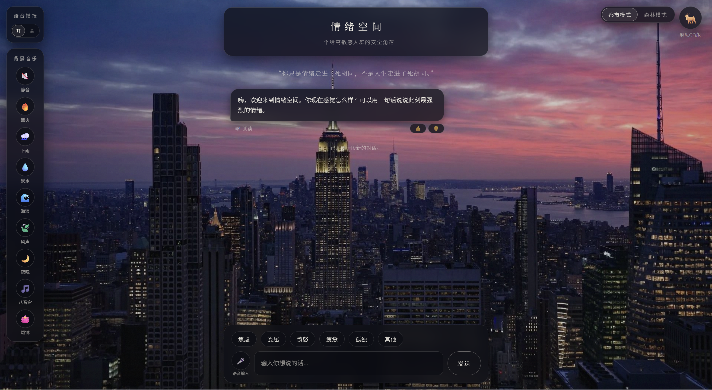
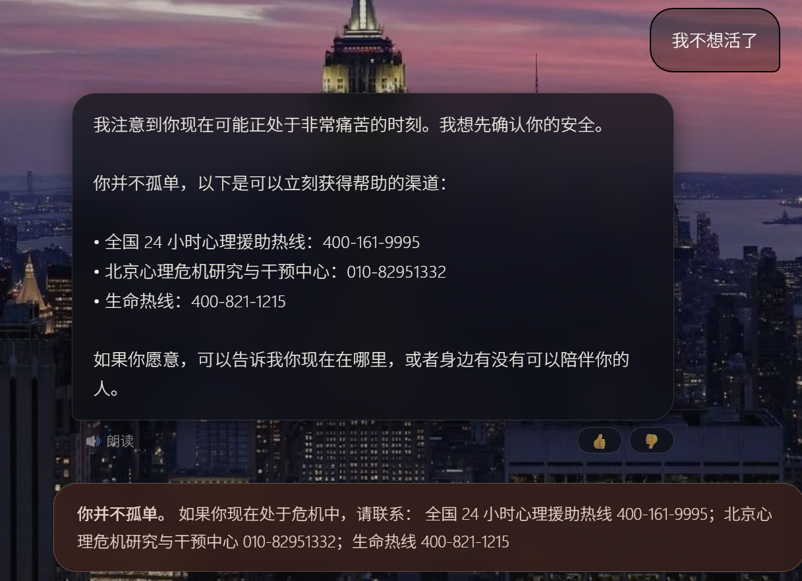
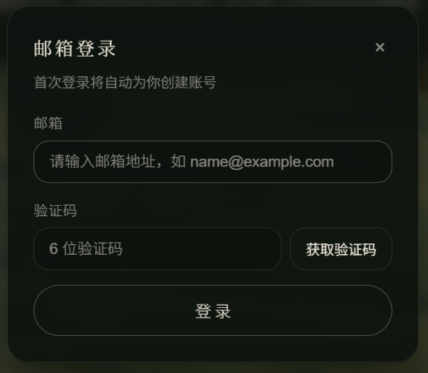
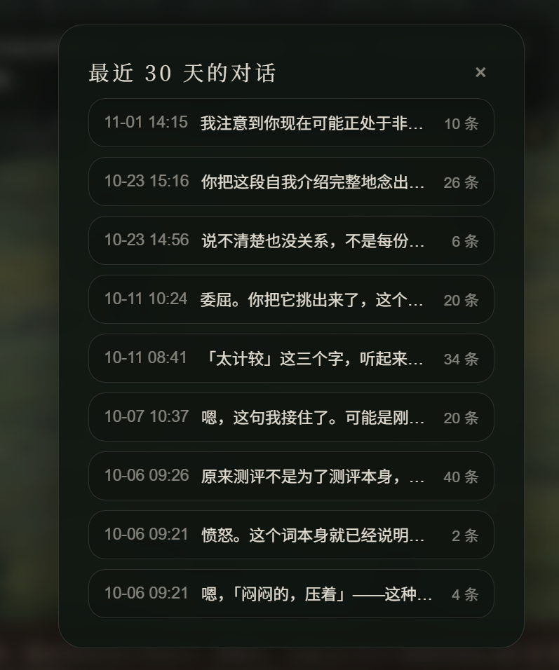
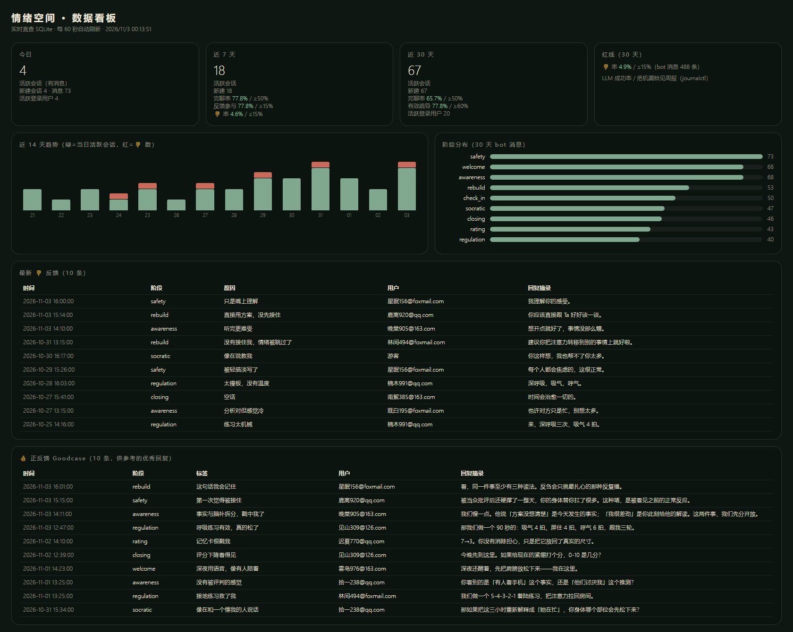

为「太敏感」的你，
把事实和脑补分开的地方。
一款面向 20-35 岁高敏感人群的即时情绪容器：用一场结构化 AI 对话，陪你从情绪应激中回落。它不是医疗产品（不做诊断），也不是聊天玩具（有明确的干预机制）。
访问线上产品 · hsp-solace.cn ↗20-35 岁、自我觉察较高的高敏感人群（HSP）
情绪应激发生后的 0-2 小时（深夜、独处、不便求助）
不是情绪价值，而是认知校准能力——能自己说出「这部分是我脑补的」
不做诊断、不做医疗建议、不替代真人咨询、不操纵情绪做留存
理论根基：Elaine Aron 的 HSP/SPS 研究 ＋「不否定结论，而是推翻信息基础」的应激干预原则
中国 HSP 总盘（14.08 亿 × 15%，Aron & Aron 1997）
20-34 岁 HSP（2.48 亿 20-34 岁人口 × 15%）
核心可服务人群「中间地带」；保守下限仍有 840 万+
临床层（焦虑 5.0%/抑郁 3.6%，CMHS）——只做识别与转介
| 派系 | 代表产品 | 致命短板 | 我们的差异化话术 |
|---|---|---|---|
| 工具派 | 潮汐 / Calm | 泛放松，不解题 | 「白噪音让你暂时听不见焦虑，我们让你看清焦虑的形状」 |
| 咨询派 | 简单心理 / 壹心理 | ¥300-800/次，高门槛 | 「¥300/小时的咨询很好，但凌晨 2 点的崩溃等不到明天」 |
| AI 陪伴派 | 星野 / 筑梦岛 | 无结构，陪着反刍 ≠ 走出反刍 | 「它陪你聊天，我们陪你把问题拆开」 |
| 通用大模型 | ChatGPT / Kimi | 什么都会聊，但不专业、无干预机制 | 「它什么都会聊，我们专治『想太多』」 |
| 开源技术派 | PsyChat / EmoLLM / FreeCBT | 是技术 demo，不是产品 | 产品化 + 效果可验证 + 危机护栏 |
「终于不用解释什么叫太敏感了」——品类级独占，国内无同定位产品；小红书 HSP 话题亿级阅读是现成获客池
交付物是认知校准能力，9 阶段状态机 + 危机规则门，效果可验证——「用户为『我变好了』付费」
加密记忆系统形成「它记得我」的转换成本，随时间增值
风险提示：大厂下场窗口期估计 6-12 个月——先验证效果、沉淀关系资产。
Sensory Processing Sensitivity（SPS），Elaine Aron 提出，约占人群 15-20%，具 D.O.E.S 四特质。
Depth of processing——想得多、想得深
Overstimulation——嘈杂/强光/密集社交后迅速耗竭
Emotional reactivity——同一件事感受强度是常人数倍
Sensing the subtle——察觉别人忽略的语气、表情变化
生物学证据：多巴胺奖励系统低反应 · 5-HTTLPR 基因差异 · 镜像神经元更活跃 · fMRI 显示脑岛与前额叶反应更强。差异易感性：支持性环境中 HSP 反而是表现最好的人群——高敏感是特质，不是缺陷。
| 基本 | 20-35 岁，女性约 6:4（推断，待灰度验证），一二线为主 |
| 职业 | 互联网、文创、教育等「高共情消耗」行业白领 + 高校学生 |
| 媒介 | 小红书/豆瓣/即刻重度用户，接受轻咨询，对「看病」有病耻感 |
| 应激模式 | 信号放大、忽略正面信息、信息源单一——「问题不在逻辑，在输入给逻辑的信息」 |
| 痛点金句 | 「别想太多」——亲友的安慰构成二次否定，加重自我怀疑 |
对高敏感者说「别想太多」是在攻击结论，只会引发防御；正确的介入是陪他检查：这条结论所依据的信息，哪些是事实，哪些是脑补。
反 engagement 设计，不用情绪操纵做留存；对话的目标是让用户「不需要再聊」，而不是「聊得停不下来」。
危机识别走确定性规则门，零模型依赖，宁可误报不可漏报。
UI 三原则：低饱和冷色与缓慢动画（低刺激）、温暖克制（「陪伴感来自安静的在场」）、一物一景（背景是情绪容器，不是技术秀场）。
让 2000 万「太敏感」的中国人，
第一次不用为自己的感受道歉。
| # | 功能 | 说明 | 优先级 |
|---|---|---|---|
| 1 | 智能疗愈对话引擎 | DeepSeek-Chat + 9 阶段状态机 + 13 条 HSP 约束 + JSON 五字段契约校验，生成成功率 100% | P0 |
| 2 | 危机识别与规则门 | 15 个危机关键词，纯规则拦截、零模型依赖，热线置顶（全国 24h 400-161-9995 等 3 条） | P0 |
| 3 | 语音输入（ASR） | Web Speech API 语音转文字 | P0 |
| 4 | 情感语音播报（TTS） | 豆包语音大模型 2.0（火山引擎），句子级队列、SSE 流式边下边播、首音约 2 秒、新回复自动打断 | P0 |
| 5 | 9 种治愈音景 BGM | 静音 / 篝火 / 下雨 / 泉水 / 海浪 / 风声 / 夜晚 / 八音盒 / 颂钵，淡入淡出切换 | P1 |
| 6 | 双主题视觉 | 暗夜森林（默认）/ 都市夜景，localStorage 记忆切换 | P1 |
| 7 | 账号 + 长期记忆 | 邮箱验证码登录，记忆卡 AES-256 加密存储，跨设备恢复对话 | P1 |
| 8 | 单条反馈 👍/👎 | 点踩展开原因标签（不强制），8 秒自动收起 | P1 |
| 9 | RAG 心理知识库 | 18 块自研语料（HSP 理论/干预技术/基础心理），向量 + 阶段加权混合检索，hit@4 = 100%（24/24） | P1 |
| 10 | 情绪标签 + 前后自评 | 情绪命名入口；对话前后 0-10 分自评，效果可量化 | P0 |
P0 = 核心干预闭环 ｜ P1 = 体验与数据增强。V1 交付 P0，V2 补齐 P1。
LLM 只提议阶段跳转，规则层批准才生效；每个阶段卡片含「回应方式 / 推进时机 / 停留信号」。
Web Speech API 语音转文字，说不出口时可以「说」。
豆包语音大模型 2.0（火山引擎）：句子级队列、SSE 流式边下边播、首音约 2 秒、新回复自动打断上一条。
淡入淡出切换，声景即容器：

全国 24h 心理援助热线 400-161-9995 等 3 条，所有层级（含游客）不设付费墙。
危机规则门测试绝不由真实用户承担；宁可误报，不可漏报——漏检 = 0 是红线。
安全组件是全站唯一豁免「低刺激」原则的组件：唯一暖红 #c96a5a 仅用于录音脉冲与 👎 警示，危机横幅是唯一允许刺目的场景。

暗夜森林（默认）/ 都市夜景一键切换，localStorage 记忆偏好——白天与深夜，各有容身之处。
邮箱验证码登录；记忆卡 AES-256 加密存储；历史对话跨设备恢复——「它记得我」是最深的关系资产。


| 方法 | Convergent mixed-methods（定量 + 质性三角验证，结论需 ≥2 类证据）；n=20 可发现 80%+ 可用性问题（Nielsen） |
| 纳入 | HSPS-14 前 1/3 分位 + 近 12 个月 ≥1 次显著应激 + PHQ-9<10 且 GAD-7<10 + 无精神科确诊史；PHQ-9 第 9 题（自伤意念）>0 不入组 |
| 配额/渠道 | 女 12 / 男 8；一二线 ≥12；五大场景各 4 人；小红书唯一渠道（预估私信触达 200-300，入组 20-24） |
| 周期 | 14 天：D0 预测试（pilot 2 人）→ D1-2 入组+情景诱发首体验（前后同事件重评 0-10）→ D3-9 自然使用 7 天 → D9-11 终访 30-40 分钟四模块 → D12-14 分析报告 |
| 统计/伦理 | 中位数+IQR+Wilson 95% CI；配对 Wilcoxon + 效应量 r；主题分析（Braun & Clarke 六步）双人编码 κ≥0.6 ｜ 知情同意 · 录音单独授权 30 天删除 · 危机热线随协议附赠 · 报酬 ¥50 |
| 定价方法 | Van Westendorp 四题 + Gabor-Granger ¥9.9-59.9 五档 + 真实付款链接「创始用户首月 ¥9.9」 |
反馈通道：单条 👍/👎（点踩附原因标签）· 隐式信号（轮次/断点/停留）· 每周抽 50-100 条对话做 6 维度人工标注（共情准确度/追问质量/阶段合理性/自然度/安全感/整体帮助感，各 1-5 分）。
| 归因 | 典型表现 | 修复手段 |
|---|---|---|
| prompt 缺陷 | 回应模板化、分析浅 | Anti-examples 反模式示例、三段式输出契约 |
| 阶段推进时机 | 按轮次而非情绪状态推进 | 阶段卡片增加「停留信号」 |
| 选项不匹配 | 二选一不符合实际处境 | 选项 ≤4 且每阶段动态生成，≤15 字 |
| 语气问题 | 复述式开头、空泛邀请、连环提问 | 13 条 HSP 约束新增 4 条「禁止」 |
| 技术故障 | 超时、JSON 校验失败 | 状态机校验 + ruleResponder 规则降级兜底 |
跑 weekly-report.js 聚合 6 指标 → badcase 分布归因 → 定位当周修复优先级 → Prompt/Few-shot 迭代 → A/B 观察 7-14 天
「被理解」反馈占比 >50% · 点踩中「太模板」<15% · 情绪评分下降率 >60% · 平均轮次稳定在 6-12
设计哲学：「零埋点开发、零看板开发」起步——MVP 只追 6 个指标 + 2 条红线，后期演进为三层指标体系。
WESU · 付费转化率 · 会员续费率 · 获客成本（小红书渠道）
情绪改善 ≥2 分占比 · 完聊率 · 语音使用率 · 7 日回访 · 反馈参与率 · 平均轮次
👍/👎 标注库 · 6 维度人工标注集——累计 1000 条后触发 SFT 微调
| 每日 | 危机日志巡检（红线：漏检 = 0） |
| 每周 | weekly-report.js 自动生成 6 指标周报 + badcase 分布 |
| 每周 | backup-db.js 自动备份 SQLite 至 backup/（JSONL 反馈双写） |
| 每月 | 人工标注批次（50-100 条）+ Few-shot 素材库扩充 |

LLM 只提议阶段跳转，isValidTransition() 规则层校验，异常 → 兜底——生成成功率 100% 的来源。
检索失败静默降级为无注入。云 embedding（阿里百炼 text-embedding-v3，1024 维）+ SQLite 应用层余弦，500 块暴力扫描 <5ms，不引入 pgvector。
生产依赖仅 5 个（express / better-sqlite3 / axios / dotenv / nodemailer）；node:test + supertest 全 mock 离线可跑。
| V1 ✅ | 基础体验：对话引擎 + 危机门 + 前后自评 |
| V2 ✅ | 能力增强：语音 ASR/TTS、双主题、账号记忆、👍👎、RAG 知识库 |
| V3 🔄 | 数据迭代：n=20 用户体验实验 → badcase 闭环优化 |
| V4 | 合规商业化：会员订阅落地、隐私合规审计、支付闭环 |
| V5 | 模型微调：1000 条+ 高质量对话后，Qwen2.5-7B LoRA SFT → DPO |
规则 + 薄 Prompt 起步，单次 4K-6K token + Prompt Caching；避免一次对话 3-6 次 LLM 调用
免费版即可完整体验核心干预——先证明「我变好了」，再谈付费
「3 小时跑通 demo」；验收线：改善或稳定 ≥60% · 响应 ≤3 秒 · 30 秒内感知价值
不做三层，先验证 ¥19.9 这个价格点（VW + Gabor-Granger + 真实付款链接）
| 层级 | 定价 | 月成本 | 毛利率 |
|---|---|---|---|
| 免费版 | ¥0 | ≈¥0.3（几乎不走大模型） | —— |
| 情绪会员 | ¥19.9/月 · ¥168/年 | ¥4-5 | ≈75% |
| 深度疗愈会员 | ¥39.9/月 · ¥298/年 | ¥6-8 | ≈80% |
付费 = 效果感知 × 关系深度 × 转换成本
落地顺序：先效果（免费证明）→ 再关系（会员记忆）→ 后刚需（订阅沉淀）。
触发点：5 轮用完 / 点语音按钮 / 连续使用 3 天
卖点：「每天不到 7 毛钱」
触发点：连续 7 天使用且情绪波动大
卖点：「每周一份情绪报告，看到你没说出口的模式」
定价锚点：「一次咨询价格的 1/15，
且凌晨 2 点随叫随到」。
| 权益 | 免费版 | 情绪会员 ¥19.9/月 | 深度疗愈会员 ¥39.9/月 |
|---|---|---|---|
| 文字对话 | 每日 5 轮 | 无限 | 无限 |
| 语音输入 ASR | —— | 20 次/日 | 无限 |
| 情感语音 TTS | —— | 10 次/日 | 无限 |
| 基础情绪标签 | ✓ | ✓ | ✓ |
| 危机热线 | 永久免费（所有层级一致，不设付费墙） | ||
| 数据存储 | 仅本机 | 30 天云端历史 | 90 天云端历史 |
| 个性化视频推荐 | —— | ✓ | ✓ |
| 本周情绪趋势 | —— | ✓ | ✓ |
| HSP 深度分析 | —— | —— | ✓（主动点出过度刺激/情绪反射/深层加工模式） |
| 每周情绪报告 | —— | —— | ✓ |
| 真人咨询折扣 | —— | —— | 8 折（预留） |
① 安全永不付费墙 ② 免费版不阉割效果——限制的是频次与增值能力，不是干预质量 ③ 克制转化：触发点选在用户自然遇到能力边界时，不用焦虑营销 ④ 渠道：小红书 HSP 内容获客 → 创始用户首月 ¥9.9 真实付款验证 → 转正式订阅
H1 ≥40% 用户认为比通用 AI 更值得付费（终访问卷）· H2 周报组付费转化 +30%（A/B）· H3 记忆组回访 +50%（A/B）· H4 情绪高分（≥7）时段转化最高（分时段分析）